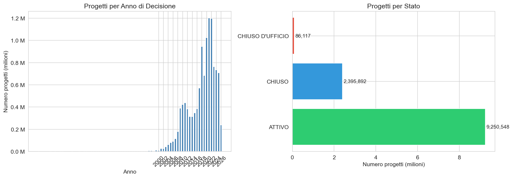
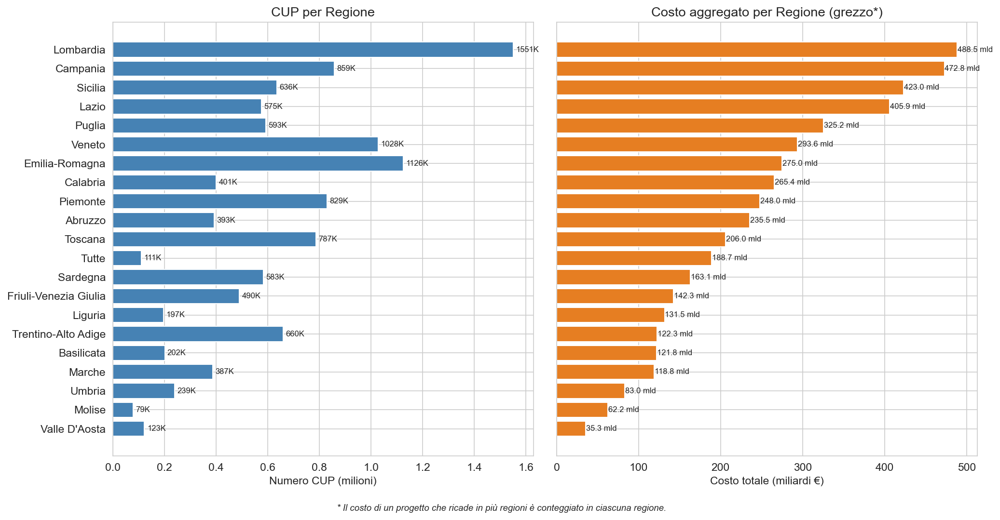
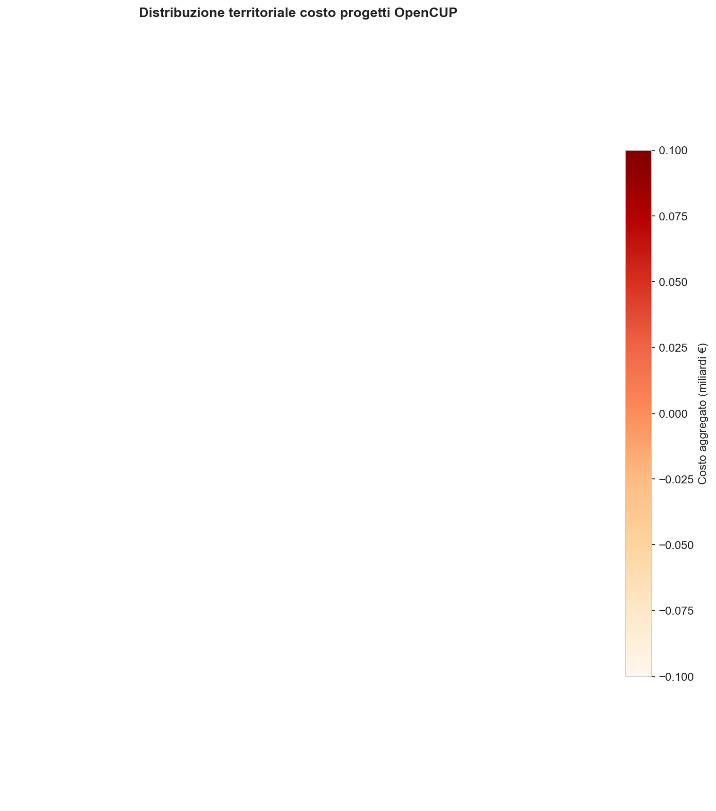
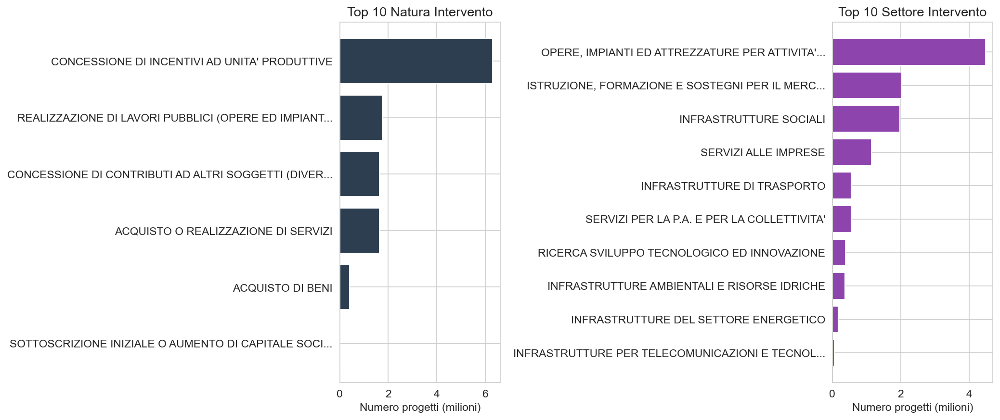
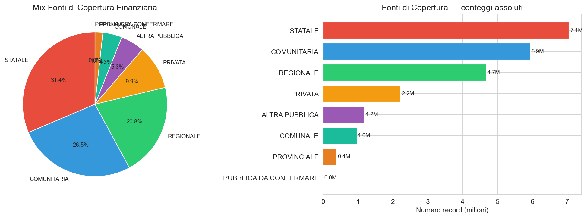
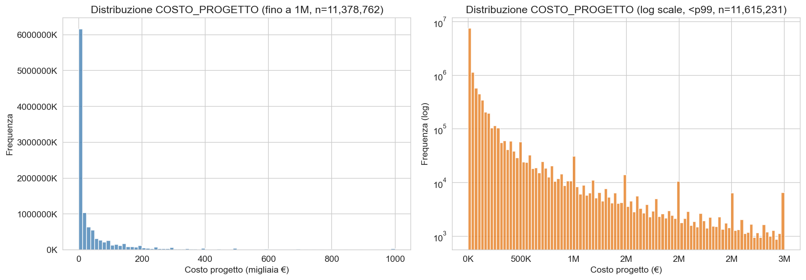
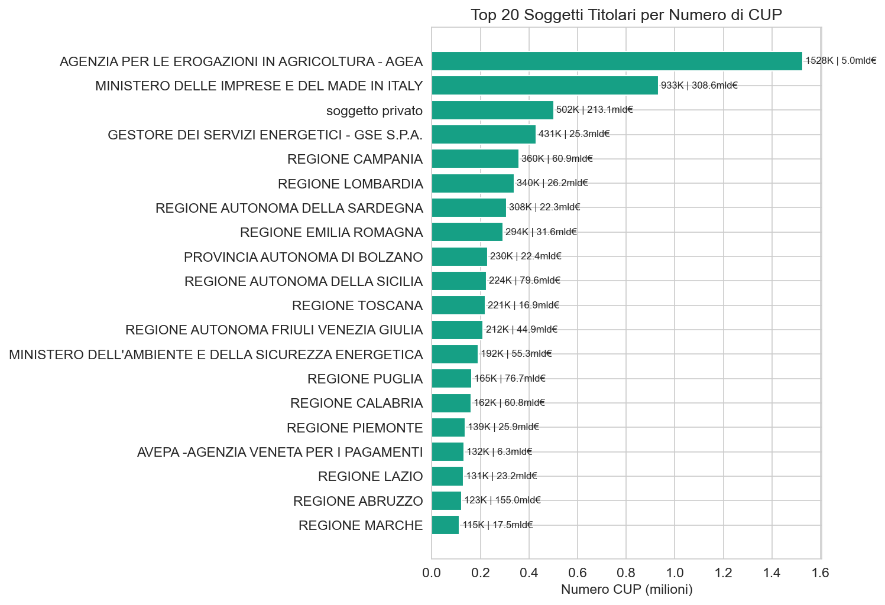

OpenCUP — Investimenti Pubblici Italiani
Analisi esplorativa del dataset open data, aggiornamento giugno 2026
Paolo Volterra ![]()
Il dataset OpenCUP (aggiornamento giugno 2026) raccoglie 11,7 milioni di Codici Unici di Progetto, corrispondenti a investimenti pubblici italiani dal 2000 ad oggi per un costo dichiarato complessivo di circa 4.200 miliardi di euro. L’analisi esplorativa descrive la struttura del portafoglio, la distribuzione temporale, geografica e settoriale dei progetti, le fonti di copertura finanziaria e la concentrazione per soggetto titolare. Il risultato più rilevante è la forte dualità strutturale del portafoglio: l’80% dei CUP ha importo inferiore a 100.000 € e vale complessivamente il 4% del costo totale; all’opposto, 4.569 mega-progetti con costo superiore a 100 milioni di euro concentrano il 43% del valore aggregato. I riferimenti PNRR non risultano presenti nell’aggiornamento corrente come campo esplicito.
OpenCUP, investimenti pubblici, CUP, open data, Italia, analisi territoriale, PNRR
1 Il sistema CUP e il dataset OpenCUP
Il Codice Unico di Progetto (CUP) è l’identificativo alfanumerico assegnato a ogni intervento di investimento pubblico ai sensi della Legge 3/2003 e del DPCM 25 settembre 2002. È obbligatorio per tutti i progetti finanziati con risorse pubbliche — nazionali, regionali, comunitarie — e per quelli inseriti nel Documento di Economia e Finanza. Il CUP segue il progetto dalla fase decisionale fino alla chiusura, permettendo in teoria la tracciabilità completa del ciclo di vita dell’investimento.
Il portale OpenCUP gestito dal Dipartimento per la Programmazione Economica (DIPE) della Presidenza del Consiglio pubblica l’archivio completo in formato open data con aggiornamenti periodici. L’aggiornamento esaminato in questo documento è quello di giugno 2026.
1.1 Struttura del dataset
Il dataset è composto da quattro tabelle distinte, joinabili tramite il campo CUP:
| Tabella | Righe | CUP univoci | Nota |
|---|---|---|---|
progetti |
11.732.557 | 11.732.557 | 62 colonne; unità di analisi principale |
localizzazione |
13.368.351 | ~10.200.000 | 1,14 righe per CUP in media (un progetto può coprire più comuni) |
soggetti |
54.071 | — | Anagrafica soggetti (no CUP diretto) |
fonti_copertura |
22.452.684 | ~11.700.000 | ~1,91 fonti per CUP in media |
La chiave CUP è univoca nella tabella progetti. Il join con localizzazione è uno-a-molti: un progetto può ricadere in più comuni, province o regioni. Tutte le analisi geografiche in questo documento usano DISTINCT CUP, REGIONE per evitare la duplicazione del costo dei progetti multi-regionali.
2 Distribuzione temporale: il ciclo dell’investimento pubblico

Nuovi CUP per anno di decisione (sinistra) e distribuzione per stato (destra)
Il corpus copre il periodo 2000–2026. I dati pre-2010 sono incompleti per effetto dell’adozione graduale del sistema CUP nelle amministrazioni periferiche. Dal 2010 in poi la copertura può considerarsi sostanzialmente completa.
2.1 Trend 2010–2026
La tabella seguente riporta il numero di nuovi CUP e il costo dichiarato aggregato per anno:
| Anno | Nuovi CUP | Costo dichiarato (mld €) | Costo medio (K€) |
|---|---|---|---|
| 2010 | 422.202 | 261 | 617 |
| 2011 | 437.450 | 228 | 521 |
| 2012 | 383.727 | 161 | 421 |
| 2013 | 315.340 | 76 | 242 |
| 2014 | 313.982 | 85 | 270 |
| 2015 | 346.870 | 64 | 185 |
| 2016 | 384.707 | 85 | 221 |
| 2017 | 571.187 | 98 | 172 |
| 2018 | 945.407 | 128 | 135 |
| 2019 | 684.718 | 118 | 172 |
| 2020 | 1.024.813 | 192 | 187 |
| 2021 | 1.202.880 | 254 | 211 |
| 2022 | 1.197.619 | 282 | 235 |
| 2023 | 763.248 | 240 | 314 |
| 2024 | 734.814 | 242 | 330 |
| 2025 | 709.483 | 359 | 506 |
| 2026 | 239.128 | 69 | 287 |
Emergono due tendenze distinte:
Volume: il numero di nuovi CUP ha raggiunto il picco nel biennio 2021–2022 (oltre 1,2 milioni/anno), riflettendo verosimilmente le misure post-pandemia, i bandi del PNRR e l’accelerazione del Piano Nazionale Complementare. Dal 2023 il volume si ridimensiona verso livelli più normali (700–760K CUP/anno).
Dimensione media: il costo medio per CUP ha seguito un percorso opposto — in caduta dal 2010 al 2018 (dai 617K€ ai 135K€) per effetto della crescita percentuale degli incentivi a pioggia di piccolo taglio, poi in risalita fino a 506K€ nel 2025, segnalando uno spostamento verso progetti di maggiore dimensione (infrastrutture, energia, transizione digitale).
Stato dei progetti: 78,8% ATTIVO (9,25M CUP), 20,4% CHIUSO (2,4M), 0,7% CHIUSO D’UFFICIO (86K).
3 Distribuzione geografica

CUP (sinistra) e costo aggregato in miliardi € (destra) per regione

Distribuzione territoriale del costo aggregato
La distribuzione regionale rivela una netta disomogeneità tra volume e valore degli investimenti:
| Regione | CUP (migliaia) | Costo aggregato (mld €) | Costo medio (K€) |
|---|---|---|---|
| Lombardia | 1.551 | 488,5 | 315 |
| Campania | 859 | 472,8 | 550 |
| Sicilia | 636 | 423,0 | 665 |
| Lazio | 575 | 405,9 | 706 |
| Puglia | 593 | 325,2 | 549 |
| Veneto | 1.028 | 293,6 | 286 |
| Emilia-Romagna | 1.126 | 275,0 | 244 |
| Calabria | 401 | 265,4 | 662 |
| Piemonte | 829 | 248,0 | 299 |
| Abruzzo | 393 | 235,5 | 599 |
| Toscana | 787 | 206,0 | 262 |
| Sardegna | 583 | 163,1 | 280 |
| F-V Giulia | 490 | 142,3 | 290 |
| Liguria | 197 | 131,5 | 668 |
| Tr-Alto Adige | 660 | 122,3 | 185 |
| Basilicata | 202 | 121,8 | 604 |
| Marche | 387 | 118,8 | 307 |
| Umbria | 239 | 83,0 | 347 |
| Molise | 79 | 62,2 | 787 |
| Valle d’Aosta | 123 | 35,3 | 287 |
Il dato più interessante è la dissonanza tra volume e valore nel Mezzogiorno: Campania, Sicilia, Puglia e Calabria si collocano rispettivamente al 2°, 3°, 5° e 8° posto per costo aggregato, ma i loro costi medi per CUP (550–665K€) sono sensibilmente superiori alla media delle regioni del Centro-Nord. Questo schema è coerente con la destinazione dei fondi strutturali UE e delle politiche di coesione: meno progetti, ma di maggiore dimensione.
Le regioni del Nord — Lombardia, Veneto, Emilia-Romagna — guidano per numero assoluto di CUP (molti piccoli incentivi a imprese), ma con taglio medio inferiore (244–315K€).
4 Natura e settore degli interventi

Classificazione per natura (sinistra) e settore (destra)
4.1 Natura dell’intervento
| Natura | CUP (migliaia) | % |
|---|---|---|
| Concessione incentivi a unità produttive | 6.310 | 53,8% |
| Realizzazione lavori pubblici | 1.752 | 14,9% |
| Contributi ad altri soggetti | 1.635 | 13,9% |
| Acquisto o realizzazione di servizi | 1.631 | 13,9% |
| Acquisto di beni | 402 | 3,4% |
Oltre la metà del corpus (53,8%) è costituita da concessioni di incentivi a unità produttive — ovvero contributi, crediti d’imposta e finanziamenti agevolati a imprese. Questo riflette il peso dei programmi di incentivazione industriale (Industria 4.0, Nuova Sabatini, contratti di sviluppo) e degli aiuti PAC all’agricoltura. I lavori pubblici tradizionali rappresentano solo il 15% dei CUP ma una quota assai più elevata del valore aggregato.
4.2 Settore di intervento
| Settore | CUP (migliaia) | % |
|---|---|---|
| Attività produttive, ricerca e impresa | 4.466 | 38,1% |
| Istruzione, formazione, mercato del lavoro | 2.030 | 17,3% |
| Infrastrutture sociali | 1.977 | 16,8% |
| Servizi alle imprese | 1.140 | 9,7% |
| Infrastrutture di trasporto | 553 | 4,7% |
| Servizi per P.A. e collettività | 553 | 4,7% |
| Ricerca, sviluppo e innovazione | 383 | 3,3% |
| Infrastrutture ambientali e idriche | 373 | 3,2% |
| Infrastrutture energetiche | 164 | 1,4% |
| Telecomunicazioni e ICT | 57 | 0,5% |
Il settore Attività produttive (38%) è il più numeroso, in linea con la natura incentivistica del portafoglio. Istruzione (17%) e Infrastrutture sociali (17%) riflettono il peso dei fondi strutturali europei sui programmi scolastici e sanitari. Le infrastrutture di trasporto, energetiche e ICT, pur minoritarie in numero, concentrano un valore pro-capite molto più alto.
5 Fonti di copertura finanziaria

Mix delle fonti di copertura finanziaria
Il dataset fonti_copertura contiene 22,5 milioni di record — circa 1,91 fonti per CUP in media, a indicare che molti progetti hanno una struttura di cofinanziamento misto. La distribuzione per tipologia di fonte è:
| Fonte di copertura | Record (milioni) | % |
|---|---|---|
| Statale | 7,05 | 31,4% |
| Comunitaria | 5,95 | 26,5% |
| Regionale | 4,68 | 20,8% |
| Privata | 2,22 | 9,9% |
| Altra pubblica | 1,19 | 5,3% |
| Comunale | 0,97 | 4,3% |
| Provinciale | 0,39 | 1,7% |
La copertura comunitaria al 26,5% è il principale termometro della capacità di assorbimento dei fondi europei: rappresenta il canale FESR, FSE e FEASR per i Programmi Operativi 2014–2020 e 2021–2027. La copertura privata (9,9%) è coerente con i meccanismi di cofinanziamento obbligatorio previsti per molti incentivi alle imprese.
5.1 Nota PNRR
Il dataset non contiene riferimenti espliciti al Piano Nazionale di Ripresa e Resilienza (PNRR): il campo STRUMENTO_PROGRAMMAZIONE non include la stringa “PNRR” in nessun record, e ALTRE_INFORMAZIONI registra soltanto 1.427 match — un numero irrilevante rispetto alla portata del Piano.
Possibili spiegazioni: 1. I CUP PNRR potrebbero non essere ancora stati riversati nell’archivio OpenCUP alla data di questo aggiornamento, oppure essere inseriti in un aggiornamento successivo. 2. L’identificazione richiede un join con il sistema ReGiS (Registro nazionale degli interventi PNRR) che mantiene la mappatura CUP↔︎Misura-PNRR. 3. Parte dei progetti PNRR potrebbe essere tracciata tramite la copertura “Comunitaria” senza un’etichetta specifica.
Ai fini di questo documento si usa la copertura Comunitaria (26,5%) come proxy dell’esposizione agli investimenti EU-funded, senza poter distinguere i fondi strutturali dal PNRR.
6 Distribuzione degli importi: la dualità del portafoglio

Distribuzione di COSTO_PROGETTO: scala lineare fino a 1M€ (sinistra) e log-scale (destra)
6.1 Statistiche descrittive
| Statistica | Valore |
|---|---|
| N. progetti con costo > 0 | 11.732.557 |
| Costo totale dichiarato | ~4.200 miliardi € |
| Minimo | 1 € |
| 1° quartile (Q1) | 1.630 € |
| Mediana | 10.000 € |
| 3° quartile (Q3) | 68.000 € |
| Media | 360.000 € |
| Massimo | 22 miliardi € |
La distribuzione è fortemente asimmetrica a destra (media 36× la mediana): la coesistenza di milioni di micro-incentivi (AgriCUP PAC, incentivi energia, contributi de minimis) e di grandi opere infrastrutturali produce una struttura bimodale.
6.2 La dualità strutturale
Il dato più rilevante dell’analisi è la concentrazione del valore in pochi grandi progetti:
| Fascia di importo | N. CUP | % CUP | Costo aggregato (mld €) | % costo |
|---|---|---|---|---|
| 1 – 10.000 € | 5.891.000 | 50,2% | 15 | 0,4% |
| 10.000 – 100.000 € | 3.546.000 | 30,2% | 145 | 3,4% |
| 100.000 – 1M € | 1.942.000 | 16,6% | 587 | 13,9% |
| 1M – 10M € | 318.000 | 2,7% | 832 | 19,7% |
| 10M – 100M € | 30.800 | 0,3% | 816 | 19,3% |
| > 100M € | 4.569 | 0,04% | 1.833 | 43,4% |
In sintesi: - L’80% dei CUP ha importo < 100.000 € e vale complessivamente il 4% del costo totale. - 4.569 mega-progetti (meno dello 0,05% del totale) concentrano il 43% del valore aggregato — circa 1.833 miliardi di euro.
Questa struttura è attesa per un sistema che aggrega incentivi de minimis (pochi euro) e grandi opere (autostrade, ferrovie, rigassificatori) sotto lo stesso identificatore. Ai fini delle politiche pubbliche, le due popolazioni richiedono strumenti analitici distinti.
7 Top soggetti titolari

Top 20 soggetti per numero di CUP
7.1 Per numero di CUP
Il soggetto con il maggior numero di CUP è AGEA (Agenzia per le Erogazioni in Agricoltura) con circa 1,5 milioni di codici. Il numero elevato riflette la struttura a domanda individuale dei pagamenti PAC: ogni posizione aziendale agricola genera un CUP distinto per ogni annata e misura di sostegno.
7.2 Per valore aggregato
| Soggetto titolare | CUP (migliaia) | Costo aggregato (mld €) |
|---|---|---|
| Ministero delle Imprese e del Made in Italy | 933 | 308,6 |
| Soggetto privato | 502 | 213,1 |
| Rete Ferroviaria Italiana S.p.A. | 3,8 | 211,4 |
| Regione Abruzzo | 123 | 155,0 |
| ANAS S.p.A. | 31,7 | 143,3 |
| Regione Autonoma della Sicilia | 224 | 79,6 |
| Regione Puglia | 165 | 76,7 |
| Ministero delle Infrastrutture e dei Trasporti | 27,6 | 63,1 |
| Regione Campania | 360 | 60,9 |
| Regione Calabria | 162 | 60,8 |
Alcuni spunti interpretativi:
- Il MIMIT (ex-Ministero dello Sviluppo Economico) è il soggetto con il valore aggregato più alto: 308,6 miliardi su 933K CUP, a riflettere il volume dei contratti di sviluppo, degli accordi di programma e degli incentivi Industria 4.0 erogati centralmente.
- RFI con soli 3.800 CUP vale 211 miliardi: il rapporto costo/CUP è >55 milioni € per progetto — conferma che pochi grandi investimenti ferroviari (AV, PNRR tratte, MITE) dominano il portafoglio infrastrutturale.
- La Regione Abruzzo (155 miliardi) appare sproporzionata rispetto al peso demografico ed economico della regione; questo può dipendere dall’attribuzione di progetti nazionali con codice territoriale abruzzese, o da programmi di sviluppo speciali (ad es. ricostruzione post-sisma L’Aquila, grandi concessioni energetiche offshore Adriatico).
- La voce “soggetto privato” (213 miliardi) segnala una quota rilevante di cofinanziamento privato rendicontato nel sistema CUP — coerente con la struttura incentivistica.
8 Sintesi e prossimi passi
| Indicatore | Valore |
|---|---|
| Totale CUP | 11,7 milioni |
| Periodo | 2000–2026 |
| Costo totale dichiarato | ~4.200 miliardi € |
| Stato: ATTIVO / CHIUSO / CHIUSO D’UFFICIO | 78,8% / 20,4% / 0,7% |
| Natura dominante | Incentivi a unità produttive (53,8%) |
| Settore dominante | Attività produttive (38,1%) |
| Copertura finanziaria prevalente | Statale (31,4%), Comunitaria (26,5%), Regionale (20,8%) |
| Mediana COSTO_PROGETTO | 10.000 € |
| Mega-progetti (>100M€) | 4.569 CUP = 43% del valore totale |
| Top soggetto per CUP | AGEA (~1,5M CUP) |
| Top soggetto per costo | MIMIT (308,6 mld €) |
| PNRR esplicito | Non presente nell’aggiornamento giugno 2026 |
8.1 Direzioni di approfondimento
Il presente documento costituisce un’esplorazione iniziale. I filoni analitici prioritari sono:
- Identificazione PNRR via ReGiS: join con il registro degli interventi PNRR per isolare la componente Piano Nazionale di Ripresa e Resilienza.
- Analisi per SLL: il join con
opensituas(codice ISTAT comune) permette di riaggregare i progetti a livello di Sistema Locale del Lavoro — unità funzionale più significativa del comune per l’analisi degli investimenti produttivi. - Analisi temporale della spesa: confronto tra
ANNO_DECISIONEe stato del progetto per stimare il lag medio tra approvazione e chiusura; utile per valutare la capacità attuativa. - Analisi settoriale per Mezzogiorno vs. Centro-Nord: decomposizione del gap di costo medio tra le due aree per settore e fonte di copertura.
- Concentrazione per soggetto: curva di Lorenz del costo per soggetto titolare; analisi di dominanza di MIMIT, RFI e ANAS nel portafoglio infrastrutturale.
9 Appendice metodologica
9.1 Schema dati
Le 62 colonne della tabella progetti si articolano in:
- Identificazione:
CUP,ANNO_DECISIONE,STATO_PROGETTO - Soggetto:
SOGGETTO_TITOLARE,PIVA_CF_BENEFICIARIO,CATEGORIA_SOGGETTO - Classificazione:
NATURA_INTERVENTO,TIPOLOGIA_INTERVENTO,AREA_INTERVENTO,SETTORE_INTERVENTO,SOTTOSETTORE_INTERVENTO,CATEGORIA_INTERVENTO - ATECO:
SEZIONE_ATECO→DIVISIONE_ATECO→GRUPPO_ATECO→CLASSE_ATECO→CATEGORIA_ATECO→SOTTOCATEGORIA_ATECO - Finanziario:
COSTO_PROGETTO,FINANZIAMENTO_PROGETTO - Programmazione:
STRUMENTO_PROGRAMMAZIONE,FINANZA_PROGETTO,ALTRE_INFORMAZIONI
9.2 Gotcha tecnici
| Problema | Soluzione adottata |
|---|---|
| Encoding Latin-1 non supportato da DuckDB | Estrazione ZIP + conversione UTF-8 in memoria prima di read_csv |
| Join 1:N con localizzazione | DISTINCT CUP, REGIONE prima di aggregare per evitare duplicazione del costo |
Valori accentati corrotti in NATURA_INTERVENTO |
Usare NATURA_INTERVENTO (corretta dopo conversione UTF-8) |
TIME_PERIOD / ANNO_DECISIONE come integer |
Cast esplicito a INT prima dei confronti e ORDER BY |
| PNRR non identificabile | Proxy: COPERTURA_FINANZIARIA = 'COMUNITARIA' |
9.3 Strumenti
Elaborazioni in Python (pandas, DuckDB) sul dataset completo OpenCUP.
Trasparenza sull’uso dell’intelligenza artificiale
L’uso di strumenti di intelligenza artificiale generativa è dichiarato esplicitamente in quanto parte del processo di lavoro seguito nella redazione del presente documento. Tali strumenti sono stati impiegati a supporto della lettura, della sintesi, della riorganizzazione argomentativa e della revisione testuale, sempre nell’ambito di un processo pienamente controllato dall’autore.
La responsabilità per le fonti utilizzate, le analisi condotte, le verifiche effettuate, le interpretazioni proposte e le conclusioni formulate resta interamente in capo all’autore.
L’intelligenza artificiale è stata utilizzata come ambiente di supporto cognitivo ed editoriale, non come fonte primaria, autore autonomo o sostituto del giudizio critico.